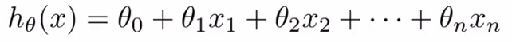
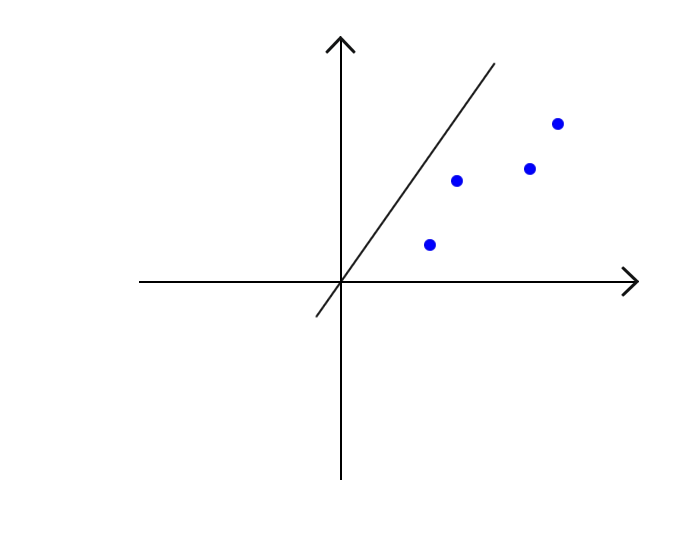
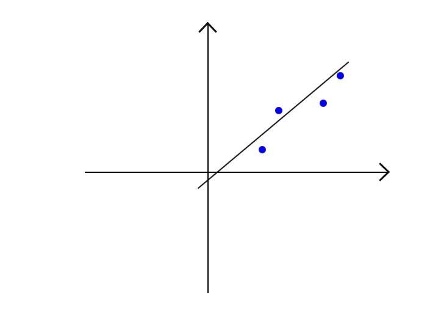
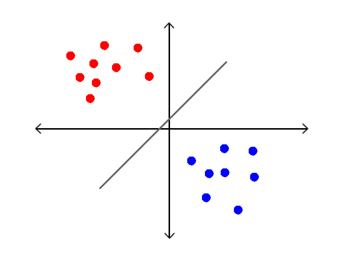
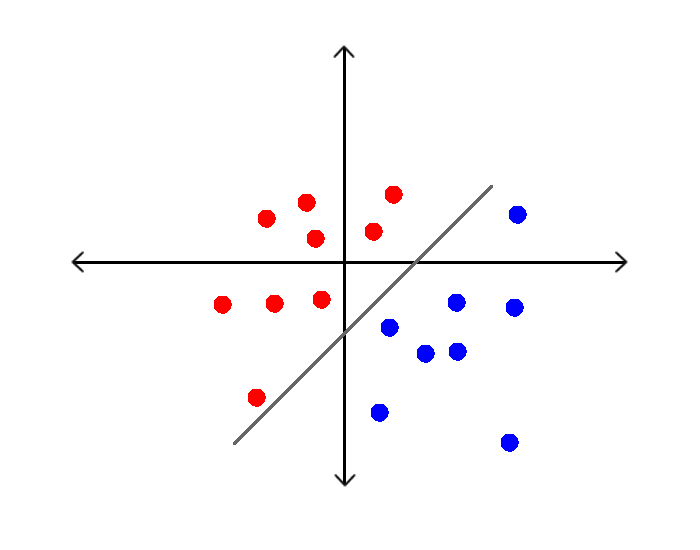
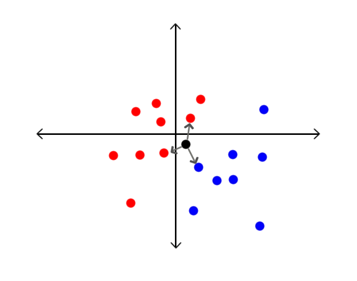

Machine Learning:
Criando seu primeiro "Hello World"
Por Murillo Grübler / @msgrubler
Roteiro
- O que é Machine Learning?
- O que ML pode fazer?
- Métodos de aprendizado
- Técnicas
- Exemplo
- Mãos a obra...
- Cursos e documentários
Um pouco de teoria...
O que é Machine Learning (ML)?
Machine Learning, também conhecido como Aprendizado de Máquina na Terra Tupiniquim, é uma subárea da Inteligência Artificial focada na construção de algoritmos que possam aprender a fazer previsões a partir de padrões em informações.
O que ML pode fazer?
Recomendação
Análise de imagens

SmartCars
E mais...
- Detecção fraudes
- Negociação financeira
- Cuidados de saúde
- Personalização no Marketing
- Pesquisa on-line
Métodos de aprendizado
- Aprendizado supervisionado
- Aprendizado não supervisionado
- Aprendizado por reforço
Então... como identificar um
Shih-tzu
Pastor-alemão
Programar as regras?
Os quatro passos para criar um modelo ML:
- Coleta de dados
- Seleção do modelo
- Treino do modelo
- Teste do modelo
Características
| Item | Peso (Kg) | Tamanho (cm) |
|---|---|---|
| Shih-tzu | 5 | 20 |
| Shih-tzu | 5,7 | 23 |
| Shih-tzu | 6 | 25 |
| Pastor-alemão | 30 | 60 |
| Pastor-alemão | 32,5 | 63 |
| Pastor-alemão | 38 | 65 |

Como descobrir o valor de uma casa
| Nº de quartos | Nº de banheiros | Garagem | Valor |
|---|---|---|---|
| 2 | 2 | 1 | 150k |
| 3 | 1 | 1 | 140k |
| 1 | 1 | 0 | 110k |
| 4 | 3 | 1 | 200k |
| 2 | 1 | 0 | ? |

Será que no momento que inicializarmos os coeficientes com valores aleatórios, o algoritmo vai nos entregar um valor aceitável?
H(x) = 0,1 + 2 * 0,6 + 1 * 0,5 + 0 * 0,1
Regressão
 Classificação
 Técnicas
- Rede Neural Artificial
- Algoritmo Genético
- Árvore de Decisão
- Regressão Linear
- Regressão Logística
- KNN (Vizinho mais próximo)
- Entre outros...
Exemplo
Mãos à obra...
Ferramentas utilizadas


Técnica utilizada
K-Nearest Neighbor (KNN)
